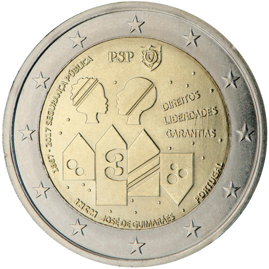
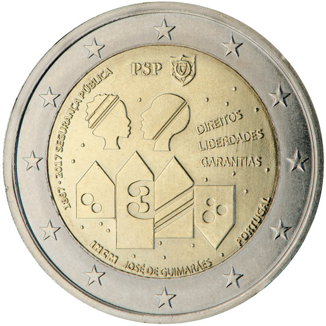
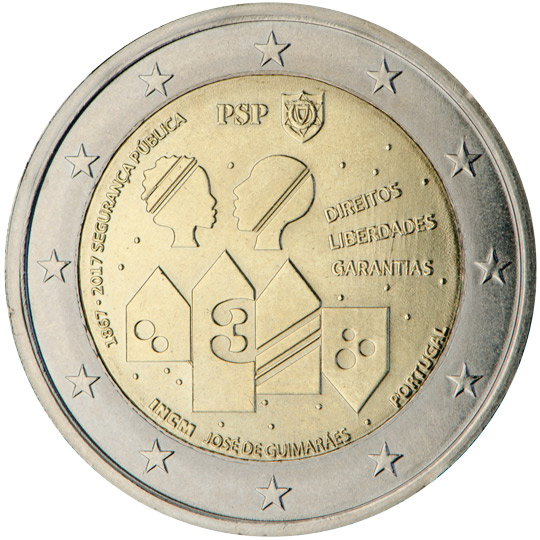
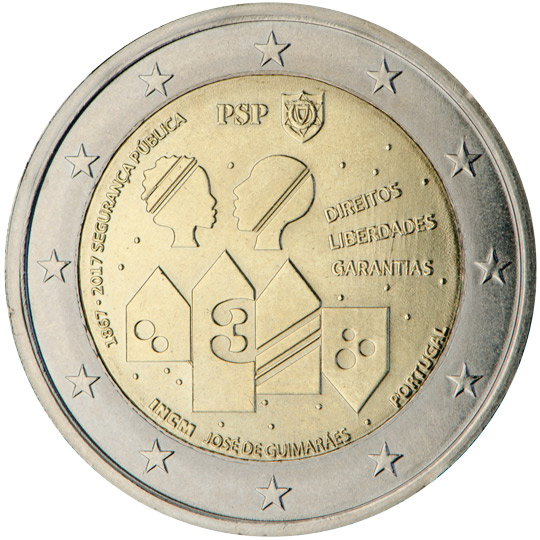
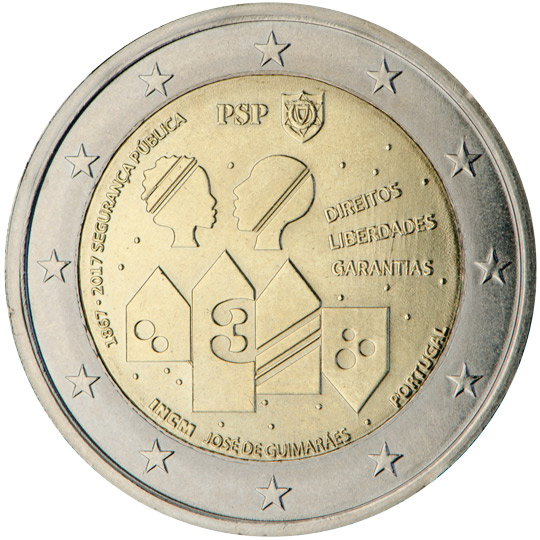

Monedas de 2 euros. Año 2017

Italia. 400º aniversario de la construcción de la Basílica de San Marcos en Venecia.
❮
❯


![Alemania. Renania-Palatinado (serie de los «Estados federados» [Bundesländer]).](../../imagenes/MonedasAnno/2017/20176.jpg)


 



 
